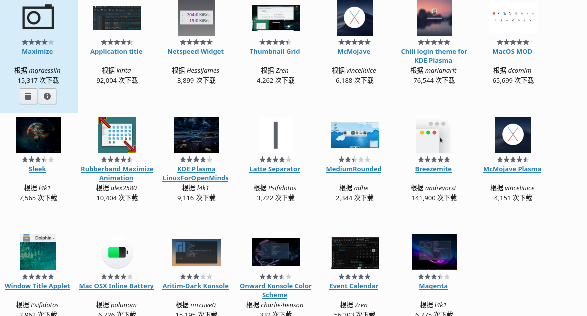

1. 了解自己的硬盘分区
通过软件 rufus 制作的启动U盘安装的 manjaro。制作启动U盘之前，先要了解自己的电脑是 GPT 分区还是 MBR 分区，以及查看自己电脑是 UEFI 引导启动还是 Legancy 引导方式启动。这让你制作出正确的启动U盘。关于如何查看自己电脑是 GPT 分区还是 MBR 分区，可以参见这里，一般来说，现在预装 win10 的电脑基本都是GPT分区 。
这里有两个注意的地方，一个是在选择的时候 ，注意选择是以 GPT 的方式烧制，还是以 MBR 的方式烧制，这里的选项跟你电脑本身相关。第二个是 manjaro 只能以 DD 镜像模式写入（这里我也不知道为什么，网上是说可能无法安装）。
制作完U盘，会显示U盘只有3M多，这是正常现象。可以参考https://itsfoss.com/create-live-usb-manjaro-linux/
2. 关闭安全启动
由于是先装的 Windows ，在开始之前，请确保自己关闭了安全启动，以避免不必要的麻烦（我就出现过无法进入manjaroU盘引导的问题，安装好manjaro系统后开启安全启动，manjaro引导丢失的问题。之后再关闭安全启动，引导恢复）。如何关闭，也请自行谷歌。
3. 显卡驱动问题
显卡驱动一直都是linux装机的一个大问题（起码我装过的ubuntu和manjaro都是这样）
进入安装界面时，显卡 driver 选择 nonfree，确定后移动到 boot Manjaro 那一行，按下 e ，在 quiet 后面那行加上如下一句：
nomodeset systemd.mask=mhwd-live.service
其中，nomodeset 指示内核不用加载显卡驱动
The newest kernels have moved the video mode setting into the kernel. So all the programming of the hardware specific clock rates and registers on the video card happen in the kernel rather than in the X driver when the X server starts… This makes it possible to have high resolution nice looking splash (boot) screens and flicker free transitions from boot splash to login screen. Unfortunately, on some cards this doesnt work properly and you end up with a black screen. Adding the nomodeset parameter instructs the kernel to not load video drivers and use BIOS modes instead until X is loaded.
而systemd.mask=mhwd-live.service 参数的作用，则是 disable MHWD:
Issue was due to MHWD running during boot creating a fallback xorg conf setting the driver to vesa which is not supported on EFI systems. It’s not clear if the Manjaro devs will address the behaviour but it can be worked around by disabling MHWD from running during boot. At the boot selection prompt, press e and add to the end systemd.mask=mhwd-live.service. X will detect and handle drivers itself fine, the kernel driver for the VGA device lspci -nnk | grep VGA -A2 should show itself in use.
然后，按下 Ctrl + x或F10保存并进入安装界面(live session)，进入之后，别急，打开终端，进入这个目录：/usr/lib/calamares/modules/mhwdcfg,编辑main.py:sudo vim >
sudo vi /usr/lib/calamares/modules/mhwdcfg/main.py
编辑为如下形式：
change:
1 | def run(self): |
to:
1 | def run(self): |
不改写成如图格式，可能会遇到安装一半卡死的情况。
4. 分区
自定义分区的话，一般来说，这几个分区一定要有：/，/boot或者/boot/efi，home。swap（交换分区）可分可不分，不过一般建议多少还是给点。（分区方案可以参见这里）
最后，还有最最重要的/boot分区 ，因为我是GPT分区， uefi 启动，事先已经有一个100M的空间，所以笔者直接把/boot/efi挂载在已经存在的efi分区上，也就是分区时看见的大小为100M的那个分区（windows10的分区）：

重启计算机可能会遇到开机黑屏的情况，需要在manjaro的引导界面，将选项移动至manjaro选项，按e进入，在 quiet 后面那行加上如下一句
nouveau.modeset=0
5. 配置系统
解决N卡问题
安装完成后最重要的第一步就是修改grub，解决开机黑屏问题(避免每次开机都要在grub输入一堆参数)。因此，进入系统的第一步，是编辑/etc/default/grub文件，在quiet下面加上如下的参数：

然后在终端输入sudo update-grub更新 grub 配置。在安装专有显卡驱动后，编辑/etc/default/grub文件，在quiet下面加上如下的参数。（否则可能会卡机卡死或黑屏，能不动N卡尽量还是不要乱搞）

同样，然后在终端输入sudo update-grub更新 grub 配置。
已知问题：这样设置会使每次开机屏幕亮度最大，需要手动调节。并且将下方命令设置为开机脚本，并不 管用
#查看最大屏幕亮度
cat /sys/class/backlight/intel_backlight/max_brightness
#设置默认屏幕亮度
echo 800 > /sys/class/backlight/intel_backlight/brightness
使用国内源
sudo pacman-mirrors -i -c China -m rank
在弹出窗口中选择排第一位的源，然后刷新缓存：
sudo pacman -Syy
然后添加 ArchLinuxCN 的源，编辑/etc/pacman.conf，在文件末尾添加如下内容：
[archlinuxcn]
SigLevel = Optional TrustedOnly
之后刷新缓存，导入 archlinuxcn-keyring ：
sudo pacman -Syy && sudo pacman -S archlinuxcn-keyring && sudo pacman -Syy
6. Manjaro安装后常见问题解决
解决Manjaro更新后字体方框问题，即进入tty后会出现方块字
sudo pacman -S wqy-microhei
Manjaro安装搜狗输入法
sudo pacman -S yaourt
yaourt -S qtwebkit-bin
sudo pacman -S fcitx-sogoupinyin fcitx-configtool fcitx-im fcitx-sogoupinyin
sudo pacman -U https://arch-archive.tuna.tsinghua.edu.cn/2019/04-29/community/os/x86_64/fcitx-qt4-4.2.9.6-1-x86_64.pkg.tar.xz
sudo nano /etc/environment
粘贴下面进去
export GTK_IM_MODULE=fcitx
export QT_IM_MODULE=fcitx
export XMODIFIERS=”@im=fcitx”
终端输入
qtconfig-qt4
找到interfac，然后看到Defult Input Method，设置为fcitx左上角save保存
如果设置不生效的话尝试写进~/.xporfile里面
7. Manjaro美化
连接蓝牙设备
如果你的manjaro连接蓝牙总是断开，就算连上也没有声音，等等问题。
可以尝试更换内核版本，或者阅读下这篇文章，可能对你有帮助
https://wiki.archlinux.org/index.php/Bluetooth_headset_
在链接后面添加_(简体中文)，直接点击链接会没有下划线，需要手动加上，即可查看中文文档
虽然我看了半天也没弄好，还是更换成LTS版本的内核，瞬间就快乐了。
更换内核需要在grub界面选择
个人喜好的设置
桌面行为设置
- 桌面特效：个人喜欢的桌面特效为魔灯和摆动窗口
- 工作空间：点击行为更改成双击打开文件夹
窗口管理
- 窗口行为：在高级里将放置策略更改为居中
附加程序安装器

Dock拦的安装
sudo pacman -S latte-dock
配置详情（cpu温度是显示错误）
1
2
3
4
5
6
7
8
9
10
11
12
13
14
15
16
17
18
██████████████████ ████████ william@william-pc
██████████████████ ████████ OS: Manjaro 18.1.1 Juhraya
██████████████████ ████████ Kernel: x86_64 Linux 5.2.21-1-MANJARO
██████████████████ ████████ Uptime: 14m
████████ ████████ Packages: 1267
████████ ████████ ████████ Shell: zsh 5.7.1
████████ ████████ ████████ Resolution: 1920x1080
████████ ████████ ████████ DE: KDE 5.62.0 / Plasma 5.16.5
████████ ████████ ████████ WM: KWin
████████ ████████ ████████ GTK Theme: Breath [GTK2], Mojave-light-alt [GTK3]
████████ ████████ ████████ Icon Theme: Adwaita
████████ ████████ ████████ Font: Noto Sans Regular
████████ ████████ ████████ Disk: 24G / 165G (15%)
████████ ████████ ████████ CPU: Intel Core i7-7700HQ @ 8x 3.8GHz [62.0°C]
GPU: Mesa DRI Intel(R) HD Graphics 630 (Kaby Lake GT2)
RAM: 3498MiB / 15918MiB
8. Manjaro常用软件安装
科学上网
科学上网可以参考如下地址，下载electron-ssr
https://github.com/shadowsocksrr/electron-ssr
Google chrome可使用SwitchyOmega，关于SwitchyOmega的离线下载网址如下：
https://github.com/FelisCatus/SwitchyOmega/releases
Manjaro安装SwitchyOmega时，需将google chrome设置为开发者模式，将离线包后缀改为.zip，再将离线包拖入google chrome即可。
auto switch用到的规则链表https://raw.githubusercontent.com/gfwlist/gfwlist/master/gfwlist.txt
TIM/QQ
可参考https://www.bilibili.com/video/av61530440
可能以后腾讯就出linux版本了
百度云网盘
由于百度云盘出了Linux版，我们可以下载.deb的文件包（也可使用dpkg包管理来安装.deb包，但不推荐sudo dpkg -i package.deb）
检查有没有安装debtap
sudo pacman -Q debtap
没有就安装
yaourt -S debtap
升级
debtap sudo debtap -u
使用方法
sudo debtap xxx.deb
安装时会提示输入包名，以及license。包名随意，license就填GPL吧。上述操作完成后会在deb包同级目录生成x.tar.xz文件，直接用pacman安装即可
sudo pacman -U xxx.tar.xz
网易云音乐无法输入中文修复
1
2
3
4
5
6
7
8
9
10
11#1.先安装qcef这个软件包
pacman -S qcef
#2.编辑/opt/netease/netease-cloud-music/netease-cloud-music.bash，把它改成这样：
#!/bin/sh
HERE="$(dirname "$(readlink -f "${0}")")"
export LD_LIBRARY_PATH=/usr/lib
export QT_PLUGIN_PATH="${HERE}"/plugins
export QT_QPA_PLATFORM_PLUGIN_PATH="${HERE}"/plugins/platforms
exec "${HERE}"/netease-cloud-music $@
#3.安装vlc这个包
pacman -S vlcVirtualBox Kernel driver not installed (rc=-1908)
uname -a
它将显示类似该Linux用户4.6 .0-1-MANJARO ＃1 SMP PREEMPT的内容Mon May 16 02:44:59 2016 x86_64 GNU / Linux
内核版本以粗体显示，因此请为您的内核号安装virtualbox主机模块，以上面显示的内容替换46。
sudo pacman -S linux46-virtualbox-host-modules
现在加载您的virtualbox模块
sudo /sbin/rcvboxdrv setup
Virtualbox现在应该可以正常运行-否则，请使用pamac并卸载与virtualbox相关的任何内容，然后安装“ virtualbox”软件包，如果您告诉它所使用的内核版本，它将为您完成以上操作